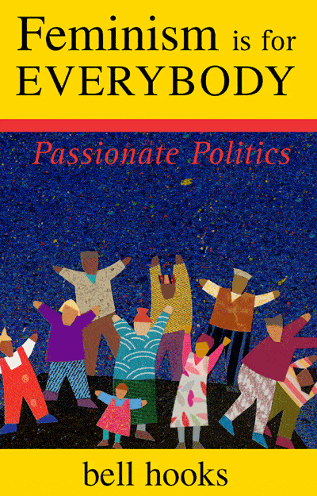
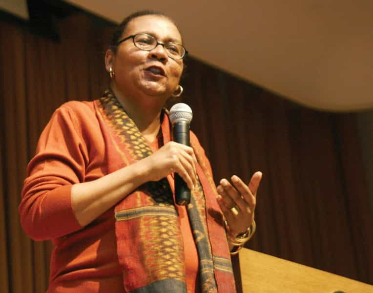
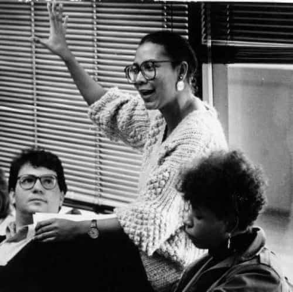
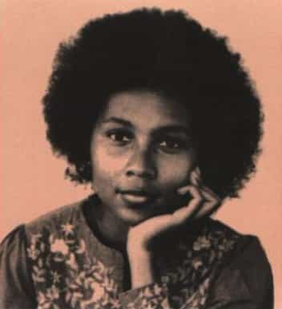

Eric is a self-employed artist who writes about modern culture. You can follow him on twitter.


A friend of mine recently challenged me to read the book Feminism Is For Everybody by Bell Hooks. He told me that, as a gender studies major, he found the pop culture version of feminism to be very different from the academic feminism he was studying, and said that if I wanted to talk about feminism, I needed to read major feminist writing.
Since I actually enjoy listening to friends and authors I disagree with, I told him I’d read the book with an open mind. While Feminism Is For Everybody didn’t make me a feminist, it did show what’s wrong with feminism, and how to fix it.

In the introduction, Bell Hooks states this book is specifically intended to convince men, who “have no idea what it is feminists want” and are only familiar with feminism through “patriarchal mass media” that “they would find in feminist movement the hope of their own release from the bondage of patriarchy.” In other words, if you read ROK, you’re her target audience.
Hooks defines feminism as “A movement to end sexism, sexist exploitation, and oppression” and considers patriarchy synonymous with domination. By defining patriarchy as a system of domination, rather than a division of social roles intended for mutual benefit, Hooks creates a straw man that equates patriarchy with oppression.
Her writing often delves into broad generalizations without any examples or definitions. For example:
Males as a group have and do benefit the most from patriarchy, from the assumption that they are superior to females and should rule over us. But those benefits have come with a price. In return for all the goodies men receive from patriarchy, they are required to dominate women, to exploit and oppress us, using violence if they must to keep patriarchy intact.
Hooks doesn’t define what “ruling over women” means, what “goodies men receive,” how men dominate women, or give any examples of actual violence committed to “keep patriarchy intact.” Her description is so vague, there’s no way to verify or falsify any of the claims she’s made. She gives no facts of any kind and only a handful of anecdotes, making the majority of the book simply opinions she asserts without evidence.

Where Bell Hooks becomes interesting is her critique of the feminist movement.
In her history of feminism, Hooks acknowledges “There was indeed a great deal of anti-male sentiment among early feminist activists,” since many came to the movement from physically abusive marriages. Despite this, Hooks argues that modern feminism is not anti-male, and the problem was that “conservative mass media constantly represented feminist women as man-haters.”
However, when talking about “anti-sexist men” joining the movement, she states:
Anti-male factions within the feminist movement resented the presence of anti-sexist men because their presence served to counter any insistence that all men are oppressors, or that all men hate women… They portrayed all men as the enemy in order to represent all women as victims.
Hooks’s writing is full of contradictions. She says in the opening that men benefit from patriarchy, and then later states “men who are not rich and powerful” don’t have much privilege and are discovering that patriarchy doesn’t benefit them. Which is it?
Her aspirations for feminism frequently contradict the things feminists actually say and do:
When feminist movement was “hot,” radical lesbian activists constantly demanded that straight women reconsider their bonds with men, raising the question of whether or not it was possible for women to ever have a liberated heterosexual experience within a patriarchal context…
Teaching one of my first women’s studies courses in San Francisco I was confronted by a group of radical lesbian students who wanted to know why I was still “into” men. After class one day in the parking lot there was a showdown.
If a group of straight men had a “showdown” in the parking lot with their gay professor, asking him why he was still into men, we would call them homophobic. While Hooks tries to fight the image of feminists as angry lesbians, her few personal anecdotes illustrate a significant portion of the feminist movement is deeply heterophobic.

“In a zealous effort to call attention to male violence against women reformist feminist thinkers still choose often to portray females as always and only victims. The fact that many violent attacks on children are perpetrated by women is not equally highlighted.”
One area I found myself agreeing with Hooks was her condemnation of child abuse perpetrated by women. Hooks’s willingness to confront female violence is incredibly brave, even if she frames it with the absurd statement that this abuse only comes from the fact many women are “more patriarchal” than men.
Women are often the primary culprits in everyday violence against children… Maternal sadism often leads coercion of children must be seen as just as horrendous as male abuse… A serious gap in feminist thinking and practice has been the refusal of the movement to confront head-on adult female violence against children.
Hooks states that the root of male violence is abuse, and shame received at the hands of the mother, because “abusive shaming lays the foundation for other forms of abuse.” As she illustrates in the best passage of the book:
Often I tell the story of being at a fancy dinner party where a woman is describing the way she disciplines her young son by pinching him hard, clamping down on his little flesh for as long as it takes to control him. And how everyone applauded her willingness to be a disciplinarian. I shared the awareness that her behavior was abusive, that she was potentially planting the seeds for this male child to grow up and be abusive to women. Significantly, I told the audience of listeners that if we had heard a man telling us how he just clamps down on a woman’s flesh, pinching her hard to control her behavior it would have been immediately acknowledged as abusive. Yet when a child is being hurt this form of negative domination is condoned. This is not an isolated incident – much more severe violence against children is enacted daily by mothers and fathers.
If women are the primary perpetrators of child abuse, and pass these patterns of abuse on to their children, the system of oppression Hooks opposes is actually matriarchal. It is a system perpetrated and passed down through bad mothers. Hooks calls her own mother “the strongest patriarchal voice in my life,” and frequently hints at an incredibly unhappy and abusive childhood.

Since the need to dominate others originates from feelings of powerlessness in childhood, then the solution would be to make sure children are loved and accepted. What has feminism done to make sure boys grow up in happy homes?
Hooks herself says, “No significant body of feminist literature has appeared that addresses boys.” Due to the influence of feminism, boys are frequently shamed simply for being masculine, drugged at young ages for wanting to play, and are falling behind women in school and work.
While Hooks advocates men playing an equal role in child rearing, most boys are now being raised in single-parent, or divorced homes, with most divorces initiated by women. Feminist policies have resulted in less involvement from fathers, and total matriarchal control of the household.
Hooks seems uncomfortable with the idea of motherhood, saying “Female sexual freedom requires dependable, safe birth control… It evokes fear within me just to imagine a world where every time a female is sexual she risks being impregnated.” She criticizes authors who suggest women can find happiness in making raising children their primary role. She projects oppression onto men, even defining her own mother’s abuse as masculine, so she can avoid truly confronting it, and continue to play out the pattern of powerlessness she learned as a child.
If women want a world without violence, they can raise one. Making sure children are loved and accepted would mean embracing the role of motherhood. It would mean taking the needs and feelings of boys seriously. It would mean choosing male partners interested in fatherhood, and giving them the support they need to remain in their children’s lives. It would mean making the family, and the needs of children the most important organizing principle of society. If that sounds like patriarchy, then maybe patriarchy is for everybody.
Read More: Why We Need To Fight For The Patriarchy